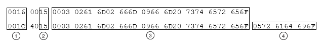

LabVIEW associates each wire and terminal on the block diagram with a data type. LabVIEW keeps track of this type with a structure in memory called a type descriptor. A type descriptor is a sequence of 32-bit integers that can describe any data type in LabVIEW. Numeric values are written in hexadecimal format, unless otherwise noted.
A type can be aggregate, meaning it can consist of different types. For example, in an array of Booleans, the array is a type, and its Boolean elements are another type. In LabVIEW, all type descriptors for such complex types are stored in a list.
You can observe type descriptors in different formats using the Flatten To String function or the Variant To Flattened String function.
|
Note��The format in which LabVIEW stores type descriptors changed in LabVIEW 8.0. LabVIEW 7.x and earlier store type descriptors in 16-bit flat representation. LabVIEW 8.0 and later store type descriptors in 32-bit flat representation. The information for LabVIEW 7.x and earlier applies if you use the Convert 7.x Data mode of the Flatten To String function. The following information applies to LabVIEW 8.0 or later. NI recommends that you use the variant data type to avoid any conflicts these format changes might cause. |
When you use the Flatten To String function to flatten variant data, LabVIEW flattens the variant and all its contents, including attributes. Using this function, the type descriptor save buffer has the following format:
| 32 bits | nTDs TDs |
| var size | nTypesUsed |
| var size | TypesUsed |
| where | nTDs | is the number of elemental type descriptors contained in the buffer |
| TDs | is the list of nTDs type descriptors | |
| var size | is the variable size and stored in a variable number, either 16-bits or 32-bits, depending on the value being represented. If the value is less than 32768, it is stored in two bytes. If the value is greater than or equal to 32768, it is stored in four bytes with the high bit set to one. | |
| nTypesUsed | is the actual number of type descriptors types being used by the entity referencing the buffer | |
| TypesUsed | is the list of indexes for all the types of TDs being used |
When you use the Variant To Flattened String function, LabVIEW flattens only the variant and discards any attributes. Using this function, a type descriptor has the following format:
[size][type code][type specific info][name (if applicable)]
| where | [size] | is the first word, in bytes, and includes the size word. The minimum value of [size] is 4. You can append a name (a Pascal string) to any type descriptor, which increases the value of [size] by the length of the name rounded up to a multiple of two. The size is 16 bits. |
| [type code] | is the second word. LabVIEW reserves the high-order byte of the type code for internal use. When comparing two type descriptors for equality, you should ignore this byte. Two type descriptors are equal even if the high-order bytes of the type codes are not. The type code is 16 bits. | |
| [type specific info] | is additional information about the type descriptor. Arrays and clusters are structured or aggregate data types because they include references to other types. For example, the cluster type contains additional information about the type of each of its elements. | |
| [name] | is a Pascal string. Name may or may not be present. |
The type code encodes the actual type information, such as single-precision or extended-precision, floating-point number, as listed in the following table. These type code values might change in future versions of LabVIEW.
The following table lists numeric and non-numeric data types, type codes, and type descriptors. The minimum value of [size] appears before the type code. Information on the possible values of [type specific info] appears after the type code for some data types.
|
Note��Name may be appended to any type descriptor. Name is a Pascal string. |
| Data Type | Type Descriptor (numbers in hexadecimal) |
|---|---|
| 8-bit Integer | 0004 xx01 |
| 16-bit Integer | 0004 xx02 |
| 32-bit Integer | 0004 xx03 |
| 64-bit Integer | 0004 xx04 |
| Unsigned 8-bit Integer | 0004 xx05 |
| Unsigned 16-bit Integer | 0004 xx06 |
| Unsigned 32-bit Integer | 0004 xx07 |
| Unsigned 64-bit Integer | 0004 xx08 |
| Single-Precision, Floating-Point Number | 0004 xx09 |
| Double-Precision, Floating-Point Number | 0004 xx0A |
| Extended-Precision, Floating-Point Number | 0004 xx0B |
| Complex Single-Precision, Floating-Point Number | 0004 xx0C |
| Complex Double-Precision, Floating-Point Number | 0004 xx0D |
| Complex Extended-Precision, Floating-Point Number | 0004 xx0E |
| Enumerated 8-bit Integer | <nn>xx15 <k><k pstrs> |
| Enumerated 16-bit Integer | <nn>xx16 <k><k pstrs> |
| Enumerated 32-bit Integer | <nn>xx17 <k><k pstrs> |
| Single-Precision Physical Quantity | <nn>xx19 <k><k base-exp> |
| Double-Precision Physical Quantity | <nn>xx1A <k><k base-exp> |
| Extended-Precision Physical Quantity | <nn>xx1B <k><k base-exp> |
| Complex Single-Precision Physical Quantity | <nn>xx1C <k><k base-exp> |
| Complex Double-Precision Physical Quantity | <nn>xx1D <k><k base-exp> |
| Complex Extended-Precision Physical Quantity | <nn>xx1E <k><k base-exp> |
| Boolean | 0004 xx21 |
| String | 0008 xx30 <dim> |
| Path | 0008 xx32 <dim> |
| Picture | 0008 xx33 <dim> |
| Array | <nn>xx40 <k dims><element type descriptor> |
| Cluster | <nn>xx50 <k elems><element type descriptors> |
| Waveform | <nn>xx54 <waveform type><element type descriptors> |
| Refnum | <nn> <refnum type code> |
| Variant | <nn>xx53 |
| nn = length; xx = reserved by LabVIEW; k = number; k pstrs = number of Pascal strings; k base-exp = number of base-exponent pairs; k dims = number of dimensions; k elems = number of elements; dim is a 32-bit integer. | |
The minimum value in the size field of a type descriptor is 4, as shown in the previous table. However, any type descriptor can have a name (a Pascal string) appended, in which case the size field is larger by the length of the name (as a Pascal string) rounded up to a multiple of two.
In the following example of an enumerated 8-bit integer without a name for the items am, fm, and fm stereo, each group of characters represents a 16-bit word expressed in hexadecimal notation.
0016 0015 0003 0261 6D02 666D 0966 6D20 7374 6572 656F
The type descriptor has the following words:
If the same enumerated 8-bit integer was named radio, its type descriptor can be interpreted as:
001C 4015 0003 0261 6D02 666D 0966 6D20 7374 6572 656F 0572 6164 696F
Below is a comparison of the two descriptors:
|
 |
|
|
|
Different lengths |
|
|
Identical type codes |
|
|
Identical representation of enum values |
|
|
Name, radio as Pascal string |
In the following example of a double-precision physical quantity with units m/s, each group of characters represents a 16-bit word expressed in hexadecimal notation.
000E 001A 0002 0002 FFFF 0003 0001
The type descriptor has the following words:
LabVIEW stores all physical quantities internally in terms of base units, regardless of the units used to display them.
The following table shows the nine bases LabVIEW uses and their representation by indexes 0 through 8.
| Quantity Name | Unit | Abbreviation | Base Value |
|---|---|---|---|
| plane angle | radian | rad | 0 |
| solid angle | steradian | sr | 1 |
| time | second | s | 2 |
| length | meter | m | 3 |
| mass | kilogram | kg | 4 |
| electric current | ampere | A | 5 |
| thermodynamic temperature | kelvin | K | 6 |
| amount of substance | mole | mol | 7 |
| luminous intensity | candela | cd | 8 |
The string, path, and picture data types have a 32-bit length, similar to the array dimension size. However, the only value currently encoded is hexadecimal FFFFFFFF, which indicates variable sized. Currently, all strings, paths, and pictures are variable size. The actual length is stored with the data.
The array and cluster data types each have their own type code. They also contain additional information about the data types of their elements and the dimensionality for arrays or number of elements for clusters.
The type code for an array is 40. The type descriptor for an array has the following format:
<nn> xx40 <k dims> <element type descriptor>
Consider the following example of a type descriptor for a 1D array of double-precision, floating-point numbers, where each group of characters represents a 16-bit word expressed in hexadecimal notation:
000E 0040 0001 FFFF FFFF 0004 000A [type specific info]
The type descriptor has the following words:
The following is the format of the type descriptor save buffer for this example:
| Number of type descriptors | 0000 0002 | The number of unique type descriptors is 2. |
| Type descriptor 0 | 0004 000A | The first type descriptor is for the double-precision, floating-point number. |
| Type descriptor 1 | 000E 0040 0001 FFFF FFFF | The second type descriptor is for the array. 000E is the length of the entire type descriptor, including the element type index. The array is variable sized, so the dimension is FFFFFFFF. |
| Number of types used | 0002 | The total number of types used is 2. |
| Types used | 0000 0001 | The types used are 0 and 1. |
Consider the following example of a type descriptor for a 2D array of Boolean values:
0012 0040 0002 FFFF FFFF FFFF FFFF 0004 0021 [type specific info]
The type descriptor has the following words:
The following is the format of the type descriptor save buffer for this example:
| Number of type descriptors | 0000 0002 | The number of unique type descriptors is 2. |
| Type descriptor 0 | 0004 0021 | The first type descriptor is for the Boolean. |
| Type descriptor 1 | 0012 0040 0002 FFFF FFFF FFFF FFFF | The second type descriptor is for the array. 0012 is the length of the entire type descriptor, including the element type index. The array is variable sized, so the dimension is FFFFFFFF. |
| Number of types used | 0002 | The total number of types used is 2. |
| Types used | 0000 0001 | The types used are 0 and 1. |
The type code for a cluster is 50. The type descriptor for a cluster has the following format:
<nn> xx50 <k elems> <element type descriptors>
Consider the following example of a type descriptor for a cluster containing two integers, a signed 16-bit integer and an unsigned 32-bit integer, where each group of characters represents a 16-bit word expressed in hexadecimal notation:
000E 0050 0002 0004 0002 0004 0007
The type descriptor has the following words:
The following is the format of the type descriptor save buffer format:
| Number of type descriptors | 0000 0003 | The number of unique type descriptors is 3. |
| Type descriptor 0 | 0004 0002 | The first type descriptor is for the signed 16-bit integer. |
| Type descriptor 1 | 0004 0007 | The second type descriptor is for the unsigned 32-bit integer. |
| Type descriptor 2 | 000E 0050 0002 | The third type descriptor is for the cluster. 000E is the length of the entire type descriptor, including the cluster type index. |
| Number of types used | 0003 | The total number of types used is 3. |
| Types used | 0000 0001 0002 | The types used are 0, 1, and 2. |
Because array and cluster type descriptors contain other type descriptors, they might become deeply nested.
Note that duplicate types are not included in the type list. The following example is a type descriptor list of a 1D array of double-precision, floating-point numbers and a cluster with one double-precision, floating-point number.
| Number of type descriptors | 0000 0003 | The number of unique type descriptors is 3. |
| Type descriptor 0 | 0005 000A 00 | The first type descriptor is for the element type and appears exactly as it does for a scalar of the same type. |
| Type descriptor 1 | 000C 0040 0001 FFFF FFFF 0000 | The second type descriptor is for the array. 000C is the length of the entire type descriptor, including the element type index. The array is variable sized, so the dimension is FFFFFFFF. |
| Type descriptor 2 | 0008 0050 0001 0002 | The third type descriptor is for the cluster. 0008 is the length of the entire type descriptor, including the cluster type index. The cluster contains one element by the type at index 2. |
| Number of types used | 0003 | The total number of types used is 4. |
| Types used | 0000 0001 0000 0002 | The types used are 0, 1, 0, and 2. |
Note that the type referenced in the cluster at index 2 must be looked up in the types used array to make sense. The second element in types used is 0, which corresponds to type descriptor 0.
The type code for a waveform is 54. A word that contains the type of waveform immediately follows the type code. The type descriptor of the cluster of the waveforms elements follows this word. There are five categories of waveforms:
The following table lists the types of analog waveforms.
| Type | Subtype Code |
|---|---|
| 8-bit signed | 14 |
| 16-bit signed | 2 |
| 32-bit signed | 15 |
| 64-bit signed | 19 |
| Double-Precision | 3 |
| Single-Precision | 5 |
| Extended-Precision | 10 |
| 8-bit unsigned | 11 |
| 16-bit unsigned | 12 |
| 32-bit unsigned | 13 |
| 64-bit unsigned | 20 |
| Complex Single-Precision | 16 |
| Complex Double-Precision | 17 |
| Complex Extended-Precision | 18 |
For example, consider a double-precision waveform, where each group of characters represents a 16-bit word expressed in hexadecimal notation:
0006 0054 0003 //size of waveform, waveform type code, and double-precision subtype code 3
0080 0050 0005 //size of cluster, cluster code, and number of elements
<type descriptor of time stamp>
<type descriptor of dt>
<type descriptor of array of element type>
<type descriptor of unused error cluster>
<type descriptor of attributes>
The type descriptor of the other types of analog waveforms is similar to the double-precision waveform. The difference is a different type for the array element and a different subtype.
The digital waveform is the only type of waveform that has a subtype code 8.
For example, consider the following, where each group of characters represents a 16-bit word expressed in hexadecimal notation:
00B6 0054 0008 //size of digital waveform, waveform type code, and subtype code 8
<type descriptor of time stamp>
<type descriptor of dt>
<type descriptor of digital data>
<type descriptor of unused error cluster>
<type descriptor of attributes>
Digital data is the only data type with a waveform type code and a subtype code of 7.
For example, consider the following where each group of characters represents a 16-bit word expressed in hexadecimal notation:
003E 0054 0007 //size of digital data, waveform type code, and subtype code 7
<type descriptor of transitions>
<type descriptor of data>
The time stamp has a subtype code of 6. The time stamp is a 128-bit fixed-point number with a 64-bit radix. LabVIEW stores a time stamp as a cluster of four integers where the first two signed integers (64 bits) represent the number of whole seconds after 12:00 a.m., Friday, January 1, 1904, Universal Time [01-01-1904 00:00:00]. The next two unsigned integers (64 bits) represent the fractions of seconds. Refer to the following support document at ni.com for more information about time stamps. In the text below, each group of characters represents a 16-bit word expressed in hexadecimal notation.
001C 0054 0006 //size of time stamp, waveform type code, and time stamp subtype code 6
<type descriptor of an analog waveform>